$$qf_commondoc_header.start$$ $$qf_commondoc_header.end$$
Basic Plot User Interface
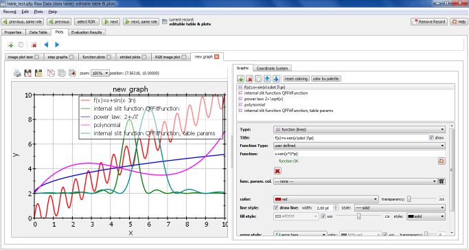
This plugin provides several plotting capabilities for data from the table in the "Plots" tab of the raw data record editor window. First you will have to add a new plot by clicking  . Then you can add graphs to this plot. If you created several plots these will be shown as a set of tabs that can also be delete using
. Then you can add graphs to this plot. If you created several plots these will be shown as a set of tabs that can also be delete using  or by clicking the "X" symbol inside the plot's tab.
or by clicking the "X" symbol inside the plot's tab.
For each plot the window will be split in two halfs (that can be resized by grabbing the separating line with the mouse). On the left you will see the plot itself together with some buttons to save/print/copy the data and the graphis. On the rhs two tabs "Plots" and "System" allow to add graphs to the plot and to change its overall appearance
Coordinate System settings
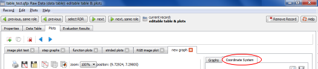
The "System" tab contains several options for the coordinate system and axis properties. They are split within several sub-tabs.
Plot Settings
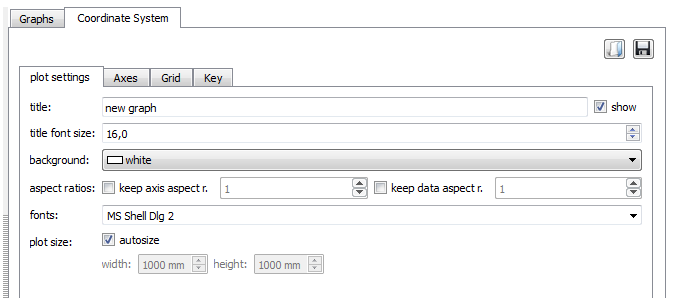
- title: the plot title, displayed above the plot, if "show" is actiavted. This title is also displayed in the tab of the plot. You can use LaTeX markup in this field. Here is an example of the plot title "plot of $f(x)=a_1\cdot x^2$":
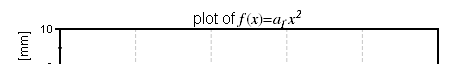
- title font size: font size for the title. The general font (see below) is used to typseset the title
- background: background color of the plot
- aspect ratio: allows to force a certain aspect ratio on the axes and the data:
- the data aspect ratio $$math:r_{data}$$ ensures, that each 1x1- is displayed as a rectangle with a width, which is $$math:r_{data}$$ as large as its hieght. Here are three examples for $$math:r_{data}=0.5$$, $$math:r_{data}=1$$ and $$math:r_{data}=3$$.
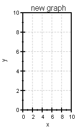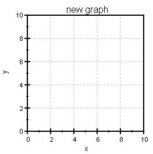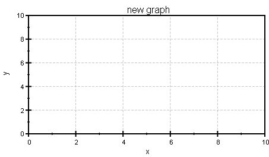
This function is useful to ensure, that e.g. pixels in an image are displayed as a square ($$math:r_{data}=1$$).
- The axis aspect ratio ensures, that the axes ranges represent a fixed ration $$math:r_{axis}=\frac{xmax-xmin}{ymax-ymin}$$.
$$note:To ensure, that an image of size 100x100 pixels and square pixels is displayed as such and in a square plot, you will have to set both ratios to 1 and activate both!$$
- font: This is the font used for al labels in the plot
- plot size: If autosize is deactvated, the plot is resized to fill the available space on the screen. When exporting (e.g. to a PDF) or printing the plot, QuickFit will calculate the true plot size, based on the reolution of the screen and the plot will also appear, as on the screen. If you want to ensure a certain size of the plot (in millimeters), e.g. to prepare a graph for a publication, you can deactivate autosize and set the desired plot size below. $$note: If the plot appears too smal on the screen, you can magnify the view using the zoom control above the plot: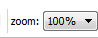$$
Axes
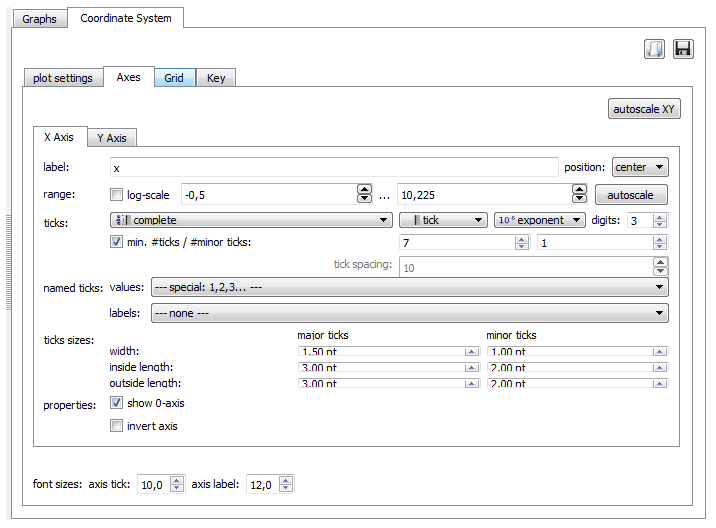
In this tab, you can specify the properties/appearance of the plot axes. One tab exists for every axis in the plot (e.g. x, y).
- label: The axis label. You can use LaTeX markup in this field. The position of the axis label (left/center/right) can also be specified. THe following examples show the label "position $\xi_2$ [mm]" in the three positions left, center and right:
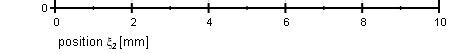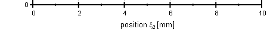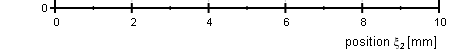And the same settings for the y-axis, where left/center/right translates to bottom/center/top:
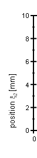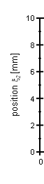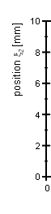
- range: here you can specify the axis range (minimum ... maximu) and set the axis mode to log-scale. It is also possible to autoscale the plot with the button "autoscale" (or "autoscale XY" for a simultaneous autoscale of both axes). Then QuickFit will set the axis range, so that all data points of all plots are shown. Here are two examples of linear and logarithmic axes for the range of 1..1000:
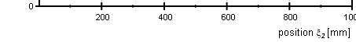
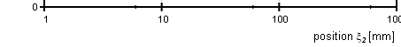
- ticks: Here you can set the appearance of the axis ticks. The first two comboboxes allow to set, what type of axis should be drawn on the bottom and on the top (x-axis) or left and right (y-axis) of the plot:
- complete is an axis with ticks and labels This is the default setting for bottom or left axes.
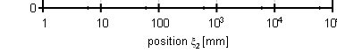
- tick+lab. is an axis with ticks and tick-labels, but without axis label
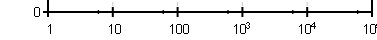
- tick is an axis with ticks, but without tick or axis labels
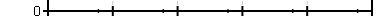
- line only displays a line, that limits the plot. This is the default setting for right or top axes.

- none this does not even plot a line
In the third combobox you can specify, how the axis ticks should be plotted:
- exponent (the default) displays numbers in the exponential form
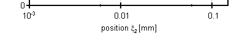
As you can see in the example, the number is limited to a given number of significant digits (entered in the input field "digits" on the right of the combobox). This number of digits is also used to decide, whether the number is written with or without an exponent.
- default displays the number as a floating point number with the specified number of digits:
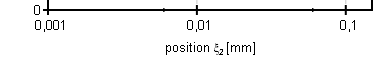
- character uses the standard characters (f, p, n, µ, m, k, M, G) to specify the exponent of the number:
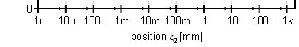
- time/date/datetime displays the tick labels as dates, times, or both.
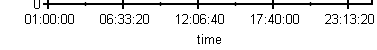
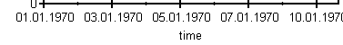
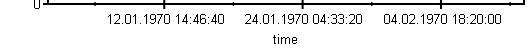
$$note: dates and times are represented as the number of milliseconds since the 1.1.1970 00:00:00 (Unix time!).$$
Finally you can specify the tick spacing:
- If min #ticks/#minor ticks is activated, you can specify the minimum number of ticks, that QuickFit should display within the given axis range. The plugin will then choose the tick spacing (using an internal algorithm) so, that this requirement is met. In linear mode, this algorithm uses spacings, that are multiples of 1, 2, 2.5, 5. This algorithm works for both linear and logarithmic axes.
- If min #ticks/#minor ticks is deactivated, you can specify the tick spacing directly. THe numbering starts at 0, so if you enter a spacing of 10, you will end up with axis ticks at 0, 10, 20, 30, ... or whatever of this series fits into your axis range.
The minor ticks are always given as the number of ticks between two major ticks. The default is 1:
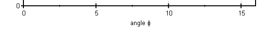Especially for logarithmic axes, a choice of 9 might be useful:
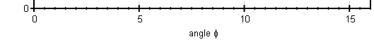
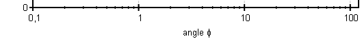
- named ticks: You can also generate an axis with user specified axis ticks. For that, you have to add two columns to the table. One, which specifies the location of the tick and one with the labe, that should be displayed in the tick. The select these two column in the given comboboxes. Here is an example:
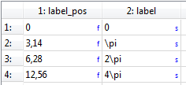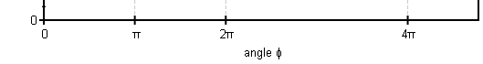
- tick sizes: Here you can specify the width, inside and outside lengths of the mino and major ticks.
- show 0-axis: if activated, the plot will contain a thick line through 0 (i.e. perpendicular to the axis). Here are two examples with and without the 0-axes:
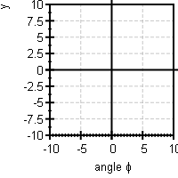
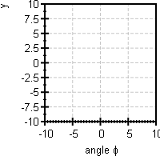
- invert axis: reverses the axis, so the range 0..100 is actually a range 100..0
- font sizes: sets the font sizes used to draw the axis tick labels and the axis labels.
Key
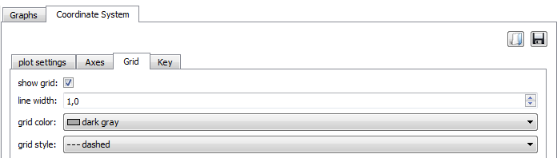
Grid lines are always drawn perpendicular to the two axis at the positions of the major axis ticks.
- show grid: switches the grid on and off< (for both axes!)/li>
- line width: line width of the grid lines
- grid color: color of the grid lines
- grid style: style of the grid lines (solid, dashed, dotted, ...)
Key/Legend
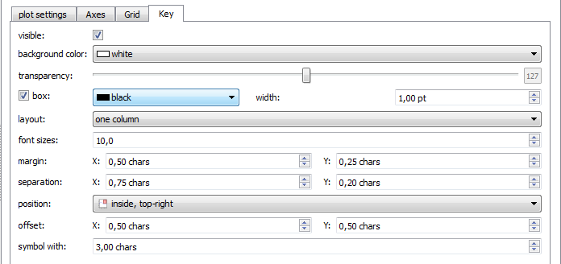
This plugin may add a key/lgened to the graph, which contains an entry for all graphs with a visible title!
- visible: switches the key on or off.
- background color: background color of the key
- transparency: allows to make the key box (i.e. only the background!) translucent
- box: allows to specify, whether a solid rectangle is drawn around the key and if so, in which color and width
- layout: specifies the layout (one or multiple columns) of the key
- font size: font size of the key entries
- margin: margin between the key box and the entries
- separation: separation between lines and columns in the key
- position: position of the key
- offset: offset of the key from the location, specified in position
- symbol width: width of the graph symbol, that is displayed next to the graph name.
Saving/Loading Axis settings
You can use the two buttons 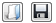 at the top of the system tab to store the current settings to a file and reload them later for another plot.
Graphs
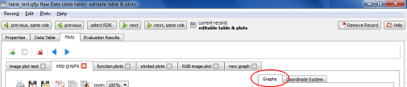
Basic Graph Properties
In the "Graphs" you may add to or remove graphs from the list of graphs using the buttons above the list. Below the list you can specify options for each graph:
- Each graph has a type (lines, bars, image, ...) and a title which is displayed in the key (if the checkbox show next to the label edit widget is activated).
- Depending on the type of plot you may choose up to four columns (X data and error, Y data and error) from which to take the data for the plot.
- Error may either be symmetric (e.g. if obtained from the standard deviation) or asymmetric (e.g. if the 25% and 75% quartiles are used for the error bars). In the first case, the error bars span the range $$math:x-\sigma...x+\sigma$$, where $$math:\sigma$$ is the symmetric error and x is the position of the data point. In the second case, the error bars span the range $$math:x-\sigma_L...x+\sigma_U$$, where $$math:\sigma_L$$ and $$math:\sigma_U$$ are the lower and upper errors.
- You may also use only a subset of datapoints from the colmun(s) by a method called "striding". If this is activated, the graph will use the row "stride start" as first data element and then only every stride-th row from the column. So if start=1 and stride=2 the plot will only show the data from rows 1,3,5,7,... For start=2 and stride=3 the used rows are 2,5,8,...
- A second option to select a subset of data is the select data function. Here you can specify a column and a condition on the values in that column. The plugin the goes through all rows of the test-column and checks, whether the specified condition applied. If so, the datapoints from the other columns, which are specified for the plot, are used. In a simple example, you can specify the X-data column as test-column and the filter "in range" -2 ... 2. Then only thise datapoints are plotted, where the x-value is in the range -2...2.
- For image plots you have to specify the width of the image in pixels. The height of the image in pixels is then the number of rows in the selected column divided by the width (integer division!). Here is an example of a column containing 30 rows. with an image width of 10, the resulting image will be 10 pixels wide and 3 pixels high, with the ordering as given here:
+--------+
| row 1 | +
| row 2 | + image
| ... | + row 1
| row 10 | +
| row 11 | +
| ... | + image row 2
| row 20 | +
| row 21 | +
| ... | + image row 3
| row 30 | +
+--------+
Then you can position the image and set its size in system coordinates (x, y, image width, image height). For image plot you may also select a colorscale and format the colorbar and a value range on which to scale the colors. For mask image plots, you may specify two colors for true (!=0) and false (equal 0). the bar label will be used as a label for the color bar axis, so do not confuse with the graph title.
- For non-image plots several options exist to set the plot appearance. Depending on the plot type you may select plot symbols (and their size) whether to draw a line between the data points (and its style), how to fill the plot and how to draw error bars (as bars, lines, polygons etc.)
Graph Types and Advanced Properties
line/scatter plots
These are simple plots of data X vs. Y. You can specify how the data points are drawn, whether a line is shown and a sytle for the error bars. Here is an example with standard error bars and no connecting lines, as well as with error polygons and line, but without symbols:
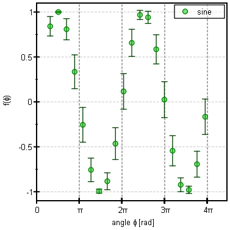
parametr. scatter plot
This is an advanced scatter plot, which allows to set the color and/or size of each symbol according to a column of data. This ways you can generate bubble plots. The color is picekd from a user-specifyable color palette. The symbol size is specified in points (pt!!!). Here are two examples:
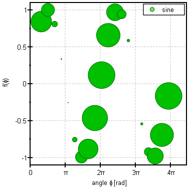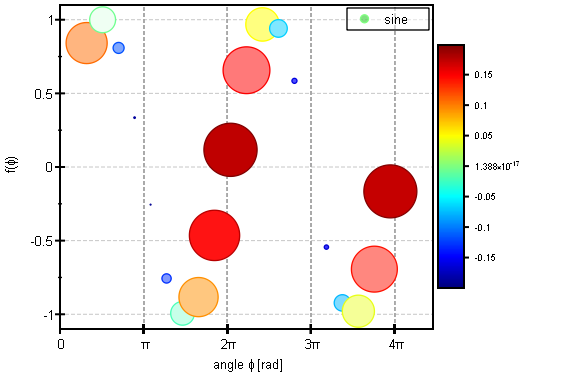
Function Plot
This is like a line plot, but plots a user-specified function. You may use all simple math functions (except table functions of course) of the parser, also used for table cell calculations. These functions and constants are available:$$insertglobal:paerserref.inc$$
You can also choose to plot one of the internal fit functions, specified in QuickFit. Then you have to specify the function parameters in a table.
This plot uses an adaptive algorithm to determine the points on which the function should be evaluated.
Vertical Impulses
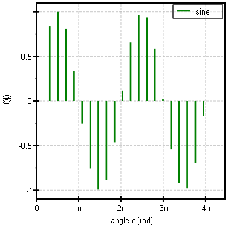
Horizontal Impulses
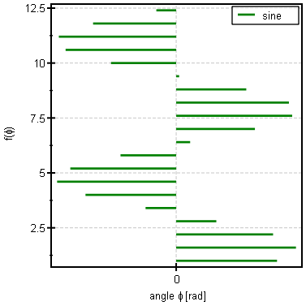
Vertical Steps
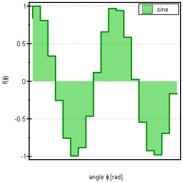
Horizontal Steps
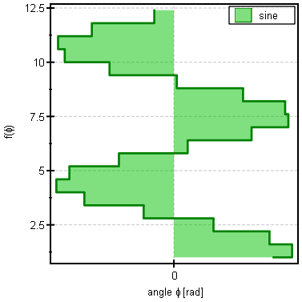
Vertical Bars
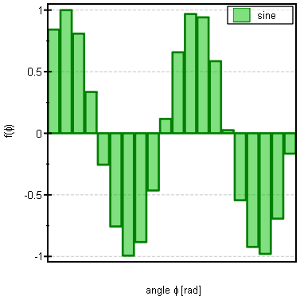
Horizontal Bars
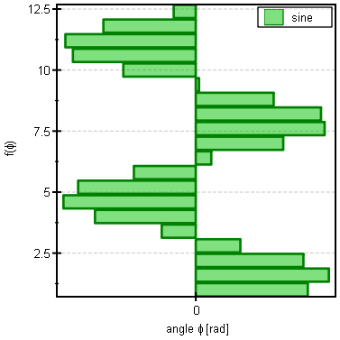
Filled Curve X
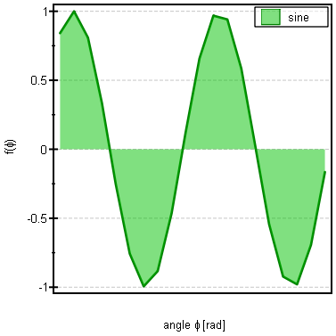
Filled Curve Y

Vertical Boxplots
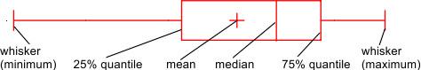
Horizontal Boxplots
Image
An image plot, where the pixels are colored from a given color palette.
RGB image
An image with up to three color channels (RGB or CMY coloring).
Mask
A plot of a boolean image, where true/false pixels are colored with one of two colors. The pixels may also be transparent, then the plot can be used to mask pixels, which you want to hide from an image plot, which lies below.
Data Fitting
The table plugin supports also data fitting. To activate this function, you first have to specify a graph, with the x- and y-columns (and possible errors on y). The you can use the buttons 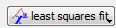 at the bottom of the advanced graph properties to perform the fits. You can either to full non-linear least-squares fitting of arbitrary fit functions, or a simple (linear or non-linear) regression. Details can be found here: